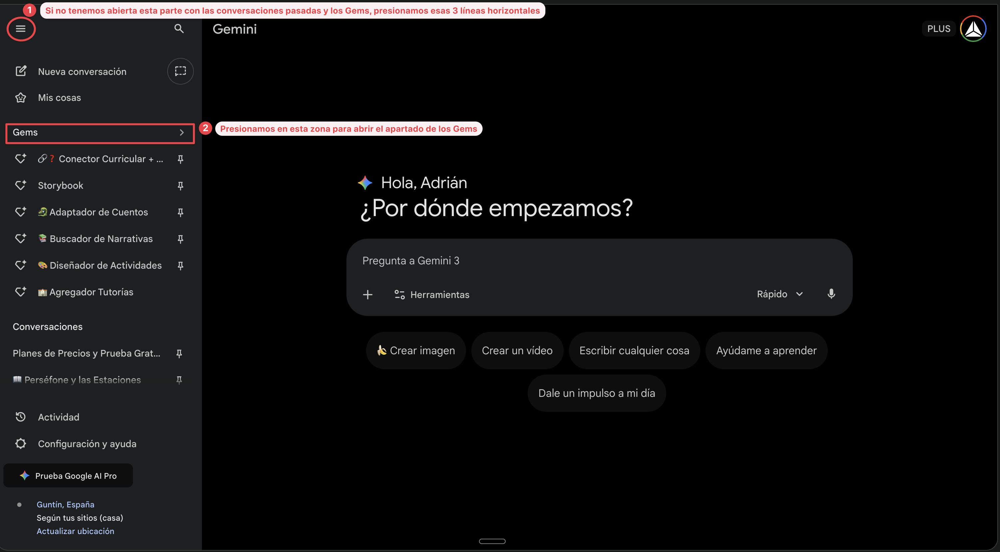
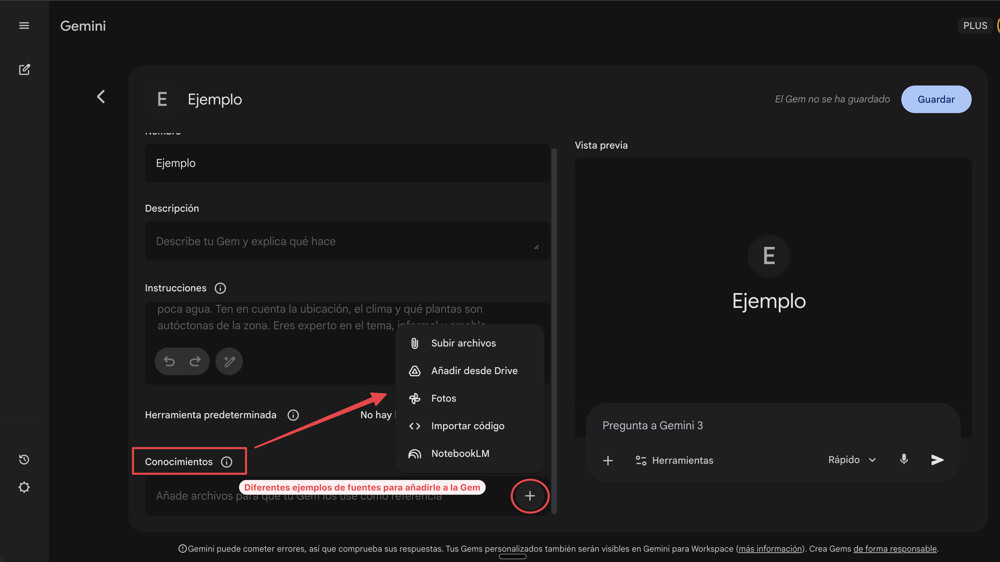

BIENVENIDA A LA FORMACIÓN
Resumen de la Formación
En esta formación aprenderás a crear narrativas accesibles usando herramientas de IA. Trabajaremos con 8 pasos que te guiarán desde la elección de una narrativa hasta la creación de actividades completas.
PASOS DE LA FORMACIÓN
- PASO 1: Elegir tu narrativa - 10 minutos
- PASO 2: Adaptar a 4 niveles - 8 minutos
- PASO 3: Crear cuento ilustrado - 6 minutos
- PASO 4: Conectar con currículo - 8 minutos
- PASO 5: Crear vídeo del personaje - 15 minutos
- PASO 6: Crear explicación curricular - 20 minutos
- PASO 7: Diseñar actividades - 12 minutos
- PASO 8: BONUS - Paquete HTML interactivo - 5-7 minutos (opcional)
Recursos Adicionales
- Pictogramas con IA - Crea secuencias de pictogramas estilo ARASAAC
- Dictado - Acelera tus procesos de escritura con voz (Typeless, Wispr Flow)
- Crear Gemas - Aprende a construir tus propias Gemas en Gemini
- PROMPTS - Accede a todos los prompts utilizados en las Gemas
DEMOS: Ejemplos Prácticos de la Formación
Aquí encontrarás ejemplos completos de lo que puedes crear siguiendo los pasos de la formación. Estos recursos fueron generados usando las herramientas de IA que aprenderás a utilizar.
¿Qué encontrarás aquí?
Ejemplos reales de materiales educativos creados con IA, organizados siguiendo el flujo de trabajo de la formación.
1. Elección de Narrativa
Conversación con Gemini para encontrar la narrativa perfecta:
Ver conversación: Elección de Narrativa2. Adaptación a 4 Niveles de Lectura
El cuento adaptado para diferentes competencias lectoras (Nivel 0-TEA, Nivel 1, Nivel 2, Nivel 3):
Ver conversación: Adaptación de 4 Niveles3. Audio con ElevenLabs
Narración profesional del cuento generada con IA:
4. Storybook Ilustrado
Cuento ilustrado generado con IA:
Ver Storybook5. Conexión Curricular
Tabla de conexiones con el currículo educativo y preguntas sugerentes:
Ver Conexión Curricular6. Vídeo del Personaje
Personaje animado narrando el cuento:
7. Audio Podcast: Contenido Curricular
Podcast explicativo sobre los conceptos curriculares del cuento:
8. Vídeo Resumen: El Misterio de las Estaciones
Vídeo educativo completo explicando el fenómeno de las estaciones:
9. Actividades Didácticas
Propuestas de actividades con rúbricas de evaluación:
Ver Actividades y Rúbricas10. HTML Interactivo con Vídeo Educativo
Actividad interactiva completa sobre el mito de Perséfone y las estaciones:
Incluye:
- Vídeo educativo sobre las estaciones
- Preguntas interactivas
- Quiz de comprensión
- Actividades de completar huecos
- Sistema de puntuación
11. Pictogramas Educativos
Secuencia de pictogramas para alumnado con TEA o necesidades de comunicación aumentativa:
Ver Pictogramas Educativos¿Listo para crear tus propios materiales?
Todos estos recursos fueron creados siguiendo los 8 Pasos de la Formación. Explora cada paso en la pestaña correspondiente y empieza a crear tus propias narrativas accesibles.
DICTADO POR VOZ CON IA
Escribe 3-4 veces más rápido dictando en lugar de teclear. Estas aplicaciones usan IA para limpiar tu dictado: eliminan muletillas, añaden puntuación y adaptan el tono automáticamente.
Ver documento completoComparativa
| Typeless | Wispr Flow | |
|---|---|---|
| Plan gratuito | 2.000 palabras/semana | 2.000 palabras/semana |
| Plataformas | Mac, Windows, iOS, Android, Web | Mac, Windows, iOS |
| Idiomas | 100+ | 100+ |
| Plan Pro | 12€/mes (anual) | 10€/mes (anual) |
Recomendación: Typeless ofrece más plataformas (incluido Android y Web) con el mismo límite gratuito. Ambas tienen precisión similar.
Typeless
Aplicación de dictado por voz con IA disponible en todas las plataformas, incluyendo navegador web.
Características principales
- Elimina automáticamente muletillas ("eh", "mmm", "este")
- Puntuación automática sin decirla
- Adapta el tono según el contexto
- Diccionario personal para términos específicos
- Privacidad: sin retención de datos ni entrenamiento de modelos
Wispr Flow
Otra excelente opción de dictado por voz con IA, especialmente pulida en Mac e iOS.
Características principales
- Elimina automáticamente muletillas
- Puntuación y formato automático
- Entiende autocorrecciones ("el martes, no, el miércoles" → escribe solo "miércoles")
- Adaptación de tono según contexto
¿Cuánto son 2.000 palabras?
Aproximadamente 3-4 páginas de texto. Suficiente para:
- 8-10 correos electrónicos largos
- 2-3 documentos educativos breves
- Múltiples mensajes y notas diarias
PASOS DE LA FORMACIÓN
PASO 1: Elegir tu narrativa
Tiempo: 10 minutos
Accede a Gemini
- Ve a: Google Gemini
- Inicia sesión con tu cuenta de Google (la misma del correo o del colegio)
- Acepta los términos si es tu primera vez
Abre la Gema
Buscador de NarrativasQué hacer
- La Gema te preguntará qué quieres trabajar
- Escríbele tu respuesta. Ejemplos:
- "Quiero trabajar las estaciones del año con 6 años" - "Dame algo de la muralla de Lugo" - "Necesito el ciclo del agua para 8 años" - "Algo sobre el respeto a los mayores para 3º primaria"
- Lee las 2-3 opciones que te sugiere
- Elige una escribiendo:
"Me quedo con [nombre]" - Copia el texto completo del cuento/mito que te da
- Pégalo en un Google Doc nuevo
Checklist
Antes de continuar, comprueba:
- Has iniciado sesión en Gemini
- Tienes el texto del cuento en un Google Doc
PASO 2: Adaptar el cuento a 4 niveles
Tiempo: 8 minutos
Abre la Gema
Adaptador de CuentosQué hacer
- Copia el texto completo de tu cuento (del Doc que creaste en el Paso 1)
- Pega el texto en la Gema y añade la edad
- Espera 30 segundos mientras la Gema adapta
- Recibirás 4 versiones:
- Nivel 0: Pictogramas/TEA (ultra-simple)
- Nivel 1: Infantil y 1º-2º primaria
- Nivel 2: 3º-4º primaria
- Nivel 3: 5º-6º primaria
- Copia las 4 versiones y pégalas en tu Google Doc
Checklist
- Tienes las 4 versiones adaptadas
- Cada versión tiene su título claro
PASO 3: Crear cuento ilustrado
Tiempo: 6 minutos
Abre la Gema
StoryBook CreatorQué hacer
- Elige qué nivel de tu cuento quieres ilustrar (Nivel 0, 1, 2 o 3)
- Copia el texto del nivel elegido
- Pega el texto en la Gema
- Espera 1-2 minutos mientras se crea el cuento ilustrado
- Verás un cuento con:
- Imágenes generadas automáticamente
- Texto en cada página
- Audio integrado (botón de reproducir)
- Navega por las páginas para ver el resultado
- Comparte el enlace:
- Clic en "Compartir" (arriba a la derecha del StoryBook)
- Copia el enlace
- Pégalo en tu Google Doc
PROTIP (Miguel)
Indícale en el PROMPT que genere las ilustraciones en blanco y negro por si quieres proponer a tus alumnos la actividad de colorear diferentes dibujos.
Checklist
- Tu StoryBook está creado y funciona
- Has guardado el enlace en tu Google Doc
PASO 4: Conectar con el currículo
Tiempo: 8 minutos
Abre la Gema
Conector Curricular + PreguntasQué hacer
- Copia el texto de tu narrativa (versión original o cualquier nivel)
- Escribe en la Gema:
- Espera 1 minuto mientras la Gema analiza
- Recibirás dos cosas:
- Tabla de conexiones curriculares (6-8 conexiones con áreas como Lengua, CCNN, CCSS, Matemáticas, etc.)
- Preguntas sugerentes que harían los personajes (6-10 preguntas)
- Lee las conexiones y preguntas
- Elige 1-2 preguntas que más te gusten para trabajar
- Cópialas en tu Google Doc junto con el concepto curricular que conectan
Checklist
- Has visto la tabla de conexiones curriculares
- Has elegido 1-2 preguntas para trabajar
- Las has guardado en tu Google Doc
PASO 5: Crear vídeo del personaje
Tiempo: 15 minutos
Accede a Grok
Grok Imagine- Inicia sesión con tu cuenta de X o Google
- Acepta los términos si es tu primera vez
Prepara la imagen del personaje
- Abre tu StoryBook (del Paso 3)
- Busca una página donde se vea bien el personaje principal
- Haz una captura de pantalla:
- Windows: Herramienta Recortes o Win + Shift + S
- Mac: Cmd + Shift + 4
- Móvil/Tablet: Botones de captura habituales
- Guarda la imagen como:
Personaje-[nombre].png
Crear el vídeo
- En Grok, clic en el icono de imagen (📎) para subir tu captura. Automáticamente generará un vídeo animando la imagen, pero para que haga lo que queremos, debemos "customizar" donde aparece "Make a video"
- Escribe el prompt en el cuadro de diálogo:
Ejemplo real:
- Espera 2 minutos mientras Grok genera el vídeo
- Verás el vídeo del personaje hablando y haciendo la pregunta
- Descarga el vídeo:
- Clic derecho → "Guardar vídeo como..."
- Guárdalo como:
Video-[nombre-personaje].mp4
- [Opcional] Puedes subirlo a tu Drive y guardar el enlace en tu Google Doc
Checklist
- Has creado el vídeo del personaje
- El personaje hace la pregunta curricular
- Has descargado o guardado el enlace del vídeo
PASO 6: Crear explicación curricular
Tiempo: 20 minutos
Accede a NotebookLM
Google NotebookLM- Inicia sesión con tu cuenta de Google
- Clic en "+ Nuevo cuaderno"
Añadir fuentes (elige UNA opción)
OPCIÓN A: Descubrir fuentes (búsqueda automática)
- Clic en "Descubrir fuentes"
- Escribe el concepto curricular que quieres explicar
Ejemplo: "Ciclo del agua para primaria" o "Gravedad y caída de cuerpos"
- NotebookLM buscará y añadirá fuentes automáticamente
OPCIÓN B: Subir tu información
Tienes 3 formas:
- Pegar texto:
- Clic en "Pegar texto"
- Copia y pega información sobre el concepto (de tu Doc, Wikipedia, etc.)
- Clic en "Insertar"
- Desde Google Drive:
- Clic en "Google Drive"
- Selecciona un documento que tengas con información del concepto
- Clic en "Insertar"
- Subir PDF:
- Clic en "Subir"
- Selecciona un PDF con información del concepto
- Espera a que se procese
Generar resumen de audio (Podcast)
- Clic en "Resumen de audio" (icono de micrófono en la parte superior)
- Personalizar el audio:
- Duración: Elige entre Breve (~5 min), Normal (~10 min) o Detallado (~15 min)
- Instrucciones: Añade un prompt personalizado
- Clic en "Generar"
- Déjalo generando (tarda 3-5 minutos) y continúa con el vídeo
Generar resumen en vídeo
- Mientras se genera el audio, clic en "Resumen de vídeo"
- Personalizar el vídeo:
- Duración: Elige entre Breve, Normal o Detallado
- Estilo visual: Elige el tipo de ilustración (Abstracto, Educativo, Minimalista, etc.)
- Instrucciones: Añade un prompt personalizado
- Clic en "Generar"
- Déjalo generando (tarda 5-8 minutos)
Mientras se genera...
Los audios y vídeos tardan varios minutos.
- Puedes ir al Paso 7 mientras se generan
- Cuando terminen, vuelve aquí para descargar el audio (.mp3) y el vídeo (.mp4)
- Guardar los enlaces en tu Google Doc
Checklist
- Has añadido fuentes a NotebookLM
- Has generado el resumen de audio (o está generándose)
- Has generado el resumen de vídeo (o está generándose)
PASO 7: Diseñar actividades
Tiempo: 12 minutos
Abre la Gema
Diseñador de ActividadesPARTE 1: Obtener el menú de actividades
- Escribe en la Gema:
- Recibirás un MENÚ con 5-6 actividades por área:
- Lengua Castellana
- Conocimiento del Medio (CCNN)
- Conocimiento del Medio (CCSS)
- Educación Artística
- Matemáticas
- Cada actividad tiene:
- Nombre
- Descripción breve (1 línea)
- Orden de menos a más compleja
PARTE 2: Elegir tus actividades
- Lee todo el menú con tu grupo
- Elige 4 actividades que más te interesen (de diferentes áreas o de la misma)
- Escribe en la Gema:
PARTE 3: Recibir actividades completas
La Gema desarrollará las 4 actividades con:
- Duración
- Materiales necesarios
- Desarrollo paso a paso (4-6 pasos)
- Opciones multinivel (más fácil / estándar / más difícil)
- Lista de cotejo para evaluar
Copia las 4 actividades y pégalas en tu Google Doc
Checklist
- Has visto el menú completo de actividades
- Has elegido 4 actividades
- Las 4 están desarrolladas completamente
- Las has copiado a tu Google Doc
PASO 8: [BONUS] Paquete HTML interactivo
Tiempo: 5-7 minutos (opcional)
Este paso es OPCIONAL - Puede ser útil si usas Edixgal o Moodle y quieres actividades digitales interactivas
Abre la Gema
Generador de Paquetes InteractivosQué hacer
- Escribe en la Gema:
- Espera 1-2 minutos mientras la Gema genera el HTML completo
- Recibirás un código HTML con todo integrado:
- Vídeo interactivo (si pusiste URL) o espacio para añadirlo después
- Quiz (5 preguntas)
- Completar huecos
- Emparejar conceptos
- Pantalla de resultados
Guardar el código como archivo
- Copia TODO el código HTML que te da la Gema
- Abre un editor de texto:
- Windows: Bloc de notas
- Mac: TextEdit (en modo texto plano)
- O cualquier editor de código
- Pega el código
- Guarda el archivo con nombre:
actividad.htmlImportante: la extensión debe ser .html
Subir a Edixgal o Moodle
- En Edixgal/Moodle, clic en "Activar edición" o "Activar modo de edición"
- En la sección donde quieras ponerlo: "Añadir una actividad o recurso"
- Selecciona "Ficheiro" o "Archivo"
- Ponle nombre: [Título de tu paquete]
- Arrastra o selecciona el archivo
actividad.htmlque guardaste - Configuración importante:
- En "Aparencia" → marca "Mostrar" o "Abrir"
- Esto hará que se vea directamente en la plataforma
- Guarda cambios
- Pruébalo: Clic en el nombre del recurso para ver el resultado
Qué verás
Un paquete interactivo con pestañas navegables:
- Vídeo interactivo (si añadiste URL)
- Quiz con feedback inmediato
- Completar huecos con drag & drop
- Emparejar conceptos
- Resultados finales con puntuación y estrellas
Todo funciona directamente en el navegador, sin necesidad de instalar nada.
Checklist
- Has generado el HTML completo
- Lo has guardado como archivo .html
- Lo has subido a Edixgal/Moodle como "Ficheiro"
- Funciona correctamente
GOOGLE AI STUDIO
Google AI Studio ofrece generación de texto a voz (TTS) con Gemini 2.5, permitiendo crear audio de alta calidad con uno o varios oradores. El TTS es controlable: puedes usar lenguaje natural para guiar el estilo, acento, ritmo y tono del audio.
Flujo recomendado: Los modelos TTS solo generan audio, pero puedes usar Gemini primero para escribir el guion y luego pasarlo al TTS para que lo lea. Así controlas exactamente qué se dice y cómo.
Dos modos de generación
Un solo orador
Ideal para narraciones, audiolibros, explicaciones. Elige una de las 30 voces disponibles y genera el audio directamente.
Varios oradores (hasta 2)
Perfecto para diálogos, podcasts, entrevistas. Asigna diferentes voces a cada interlocutor con nombres como "Speaker1" y "Speaker2".
Pasos para generar audio
- Accede a AI Studio: Ve a aistudio.google.com/generate-speech e inicia sesión con tu cuenta de Google
- Escribe o pega tu texto: El guion que quieres convertir en audio
- Selecciona la voz: Elige entre las 30 voces disponibles (Zephyr, Puck, Charon, etc.)
- Ajusta el estilo (opcional): Añade instrucciones de estilo en el prompt
- Genera y descarga: Escucha el resultado y descarga el archivo de audio
30 voces disponibles
Cada voz tiene una personalidad diferente. Aquí algunas destacadas:
Brillante
Optimista
Informativa
Juvenil
Enérgica
Relajada
Puedes probar todas las voces en la Biblioteca de Voces de AI Studio.
Control del estilo con instrucciones
Puedes controlar cómo suena el audio usando lenguaje natural:
Un orador:
"Di con un susurro misterioso: 'Érase una vez, en un bosque encantado...'"
Varios oradores:
"Haz que Speaker1 suene cansado y aburrido, y Speaker2 suene emocionado y feliz:
Speaker1: Bueno... ¿qué toca hoy?
Speaker2: ¡No te lo vas a creer!"
Ideas de uso en el aula
- Audiocuentos: Narraciones de los cuentos que crees con NotebookLM
- Podcasts educativos: Diálogos entre dos "expertos" explicando un tema
- Dictados con voz natural: Textos para practicar ortografía
- Materiales accesibles: Versiones audio para alumnado NEAE
- Aprendizaje de idiomas: Textos en diferentes idiomas (soporta 24)
Gratuito: AI Studio es completamente gratuito para uso personal y educativo.
Google AI Studio incluye un generador de aplicaciones web que permite crear prototipos funcionales sin escribir código. Describes lo que quieres en lenguaje natural y Gemini genera una aplicación completa con interfaz visual e interactividad.
Sin programación: No necesitas saber programar. Solo describes tu idea y la IA genera la aplicación completa. Puedes iterar pidiéndole cambios en lenguaje natural.
¿Qué es?
La función "Build with Gemini" de AI Studio permite crear aplicaciones web interactivas describiendo lo que quieres. Gemini genera automáticamente todo el código (HTML, CSS, JavaScript) y te muestra una vista previa en directo que puedes probar al instante.
Pasos para crear una aplicación
- Accede a AI Studio: Ve a aistudio.google.com e inicia sesión con tu cuenta de Google
- Selecciona "Build": En el menú lateral o en la pantalla principal, busca la opción de crear aplicaciones
- Describe tu idea: Escribe en lenguaje natural qué quieres crear
- Espera la generación: Gemini creará la estructura, el diseño y la lógica automáticamente
- Prueba en la vista previa: Interactúa con tu app en el panel derecho
- Itera: Pide cambios ("hazlo más colorido", "añade un botón de reinicio") y Gemini actualiza el código
- Comparte o descarga: Obtén un enlace público o descarga el código
Cómo describir tu idea
Cuanto más detallada sea tu descripción, mejor será el resultado. Incluye:
- Qué hace la app: su propósito principal
- Para quién es: alumnado de primaria, secundaria, profesorado...
- Qué elementos tiene: botones, formularios, imágenes, preguntas...
- Cómo se ve: colores, estilo, tema
Ideas de aplicaciones para el aula
Quizzes y tests
Cuestionarios interactivos sobre cualquier tema con puntuación y feedback inmediato.
Juegos educativos
Memory, emparejar conceptos, sopa de letras, ahorcado temático...
Contenido interactivo
Líneas del tiempo, mapas conceptuales navegables, fichas con pestañas.
Calculadoras y simuladores
Calculadoras de notas, simuladores de experimentos, convertidores de unidades.
Consejos para mejores resultados
- Sé específico: "quiz de 8 preguntas sobre la célula" funciona mejor que "algo sobre biología"
- Describe la experiencia: menciona colores, animaciones, sonidos si los quieres
- Itera sin miedo: puedes pedir cambios tantas veces como quieras ("cambia los colores a azul", "añade una explicación tras cada respuesta")
- Prueba antes de compartir: usa la vista previa para verificar que todo funciona
- Descarga el código: puedes descargar el HTML y subirlo a cualquier plataforma (Moodle, Google Sites, etc.)
Gratuito: La generación de aplicaciones en AI Studio es completamente gratuita con tu cuenta de Google.
SUNO: MÚSICA CON IA
Suno es una herramienta de IA que genera canciones completas (música + letra cantada) a partir de texto. Tiene un enorme potencial pedagógico para crear materiales memorables que el alumnado no olvidará.
Crear canción en SunoFlujo recomendado: Usa Gemini o ChatGPT para escribir la letra primero, y luego pégala en Suno en modo "Custom". Así controlas exactamente qué dice la canción y te aseguras de que el contenido sea correcto.
Dos modos de creación
Modo Simple
Describes lo que quieres y Suno genera letra + música automáticamente. Rápido pero menos control sobre el contenido exacto.
Modo Custom (Recomendado)
Tú escribes la letra y Suno pone la música. Control total del contenido. Perfecto para contenido educativo preciso.
Cómo usar el modo Custom
- Genera la letra con IA: Pide a Gemini o ChatGPT que escriba una letra de canción sobre tu tema:
"Escribe la letra de una canción infantil pegadiza sobre los planetas del sistema solar. Incluye estribillo que se repita. Formato: verso, estribillo, verso, estribillo."
- Accede a Suno: Ve a suno.com/create e inicia sesión
- Activa modo Custom: Busca el toggle "Custom" para activarlo
- Pega tu letra: En el campo "Lyrics", pega la letra que generaste
- Elige el estilo: En "Style of Music" escribe el género (ej: "pop infantil alegre", "rap educativo", "balada tranquila")
- Genera y elige: Suno crea 2 versiones. Escúchalas y descarga la mejor
Usos pedagógicos
Contenido curricular
Canciones para memorizar tablas de multiplicar, verbos irregulares, fechas históricas, elementos de la tabla periódica...
Convivencia
Himnos de clase, canciones sobre normas de convivencia, valores, respeto, trabajo en equipo...
Motivación
Canciones personalizadas para el grupo, celebraciones, fin de curso, bienvenida a nuevos alumnos...
Idiomas
Canciones en inglés, gallego, francés... para practicar vocabulario, estructuras gramaticales, pronunciación...
Estilos musicales que funcionan bien
Créditos limitados: La versión gratuita tiene ~50 créditos diarios (10 canciones aprox). Planifica qué canciones quieres crear. Consejo: genera la letra primero con IA para no gastar créditos en letras que no te convencen.
Ideas rápidas para probar
- Matemáticas: "Rap educativo sobre las tablas de multiplicar del 7 y el 8"
- Ciencias: "Canción pegadiza para memorizar los planetas del sistema solar en orden"
- Lengua: "Balada sobre las reglas de acentuación en español"
- Gallego: "Canción folk en gallego sobre las estaciones del año"
- Convivencia: "Himno motivador para un equipo de clase, sobre trabajo en equipo"
- Relajación: "Melodía instrumental suave para momento de lectura silenciosa"
CREAR SECUENCIAS DE PICTOGRAMAS CON IA
¿Para qué sirve este flujo de trabajo?
Este sistema te permite crear secuencias completas de pictogramas educativos estilo ARASAAC en pocos minutos, utilizando:
- Gema "Prompts Pictos (Secuenciador Visual)" (ya creada y compartida)
- Gemini con generación de imágenes
PASO 1: Abrir la Gema compartida
¿Qué hacer?
Haz clic en este enlace: Prompts Pictos (Secuenciador Visual)
Se abrirá una conversación con la Gema
PASO 2: Responder las 4 preguntas
¿Qué hacer?
La Gema te preguntará 4 cosas. Responde TODO en un solo mensaje. Por ejemplo:
PASO 3: Copiar el prompt generado
¿Qué hacer?
- La Gema te devolverá UN SOLO BLOQUE DE CÓDIGO (recuadro gris) con el prompt completo
- Haz clic en el icono de copiar (📋) en la esquina superior derecha del bloque gris
- El prompt completo queda copiado en tu portapapeles
PASO 4: Abrir una nueva conversación de Gemini
¿Qué hacer?
- Abre una nueva pestaña del navegador
- Ve a: gemini.google.com
- Haz clic en "Chat nuevo" o "Nueva conversación"
PASO 5: Activar la generación de imágenes
¿Qué hacer?
- En la parte superior, donde dice el nombre del modelo (ej: "Gemini 2.0 Flash")
- Haz clic en ese selector
- Selecciona la opción que incluya "con generación de imágenes" o similar
- Asegúrate de que está activada la capacidad de generar imágenes
PASO 6: Pegar el prompt y generar
¿Qué hacer?
- Haz clic en el cuadro de texto de Gemini
- Pega el prompt copiado (Ctrl+V / Cmd+V)
- Presiona Enter o haz clic en el botón de enviar
- Espera unos segundos mientras Gemini procesa
PASO 7: Ver los pictogramas generados
¿Qué hacer?
- Gemini generará automáticamente TODAS las imágenes de la secuencia
- Cada pictograma aparecerá como una imagen separada
- Revisa que sean el número correcto de imágenes (si pediste 4, deben aparecer 4)
- En caso contrario, solicita que regenere o que haga las imágenes que faltan (le puede costar hacer más de dos)
PASO 8: Descargar las imágenes
¿Qué hacer?
- Haz clic derecho en cada imagen
- Selecciona "Guardar imagen como..."
- Guárdalas con nombres descriptivos:
CONSEJOS PRÁCTICOS
Si las imágenes no salen como esperabas:
- Vuelve a la Gema (PASO 1)
- Describe lo que quieres cambiar
- La Gema te generará un nuevo prompt
- Repite desde el PASO 3
Si Gemini genera todo en una sola imagen:
- Esto no debería pasar con el prompt optimizado
- Si ocurre, regenera haciendo clic en el botón de regenerar o pídele que genere la imagen que falta
RESUMEN DEL FLUJO COMPLETO
1. Abrir Gema → 2. Responder 4 preguntas → 3. Copiar prompt → 4. Nuevo chat Gemini → 5. Activar generación de imágenes → 6. Pegar y generar → 7. Ver resultados → 8. Descargar
Tiempo total: 2-4 minutos
CREAR CÓMICS CON IA (NotebookLM)
Transforma cualquier historia o concepto en un cómic ilustrado usando NotebookLM. El proceso tiene dos fases: primero la IA te ayuda a crear el guion, y después genera las viñetas visuales.
Abrir NotebookLMPaso 1: Configurar el "Creador de guiones"
- Inicia sesión en NotebookLM con tu cuenta de Google
- Clic en "Nuevo cuaderno"
- En el menú izquierdo, sección "Fuentes", clic en "+" (Añadir fuente)
- Selecciona "Texto copiado"
- Copia y pega el siguiente prompt completo:
- Clic en "Insertar"
- Renombra la fuente: clic en los tres puntitos → "Cambiar nombre" → escribe
Creador de guiones
Paso 2: Crear el guion (chat con la IA)
- En la parte inferior, donde dice "Escribe algo...", describe brevemente tu historia:
Ejemplo: "Una fábula sobre una tortuga y una liebre con una moraleja final"
- La IA te hará preguntas. Contesta a cada una:
- Público: Ej: "Alumnos de 12 años"
- Páginas: Ej: "10 páginas"
- Personajes: Describe ropa y rasgos físicos (Ej: "La tortuga lleva cinta deportiva roja")
- Estilo: Ej: "Estilo Marvel", "Manga", "Looney Tunes"
- Tono: Ej: "Educativo y motivador"
- Revisa el guion. Si se corta antes del final, escribe "Continúa"
Paso 3: Guardar el guion como fuente
- Selecciona y copia todo el texto del guion que generó la IA (Ctrl+C)
- Ve al menú izquierdo → "Añadir fuente" → "Texto copiado"
- Pega el guion (Ctrl+V) e insértalo
- Renombra esta fuente a:
Guion Cómic [Nombre de tu historia]
Paso 4: Generar el cómic visual
Importante: Este paso es crítico para que funcione bien.
- En la lista de fuentes (izquierda), DESMARCA la casilla de "Creador de guiones"
- Asegúrate de que SOLO está marcada la casilla de tu nuevo "Guion Cómic"
- Haz clic en la sección "Presentaciones" (icono de diapositivas en el panel derecho)
- Clic en el icono del lápiz (Editar)
- Configura:
- Selecciona "Presentación detallada"
- Idioma: Español
- En el cuadro de instrucciones, pega este prompt:
- Clic en "Generar"
Paso 5: Ver y descargar
- Espera a que termine de procesar (aparecerá abajo a la derecha)
- Clic para abrirlo
- Puedes verlo en pantalla completa o descargarlo con el icono de descarga
Ideas de historias para cómic
- Fábulas con moraleja: La tortuga y la liebre, la cigarra y la hormiga...
- Conceptos curriculares: El ciclo del agua, la fotosíntesis, el sistema solar
- Historias de convivencia: Resolución de conflictos, trabajo en equipo
- Biografías: Vida de personajes históricos
- Cuentos adaptados: Los cuentos que creaste en los PASOS 1-2 de la formación
Checklist
- Has añadido el "Creador de guiones" como fuente
- Has creado el guion conversando con la IA
- Has guardado el guion como nueva fuente
- Has generado el cómic desde Presentaciones
- Has descargado el resultado
PROMPTS: Instrucciones para Crear Gemas
Crea tu propia Gema personalizada
Automatiza cualquier tarea repetitiva creando una Gema personalizada en Gemini. Antes de crear la Gema, es importante tener un buen prompt. Te ofrecemos dos técnicas para conseguirlo:
Técnica 1: Meta-prompting (la IA te pregunta)
En lugar de escribir tú el prompt completo, pide a la IA que te haga todas las preguntas necesarias para entender exactamente qué necesitas. Es como tener un entrevistador experto que sabe qué información necesita.
Técnica 2: Mejorador integrado de Gemini (el "lapicito")
Gemini tiene un botón mágico que mejora automáticamente cualquier instrucción que escribas. Escribe lo que necesitas de forma simple y deja que Gemini lo convierta en un prompt profesional.
Cómo usar el mejorador de Gems:
1. Accede a Gems desde el menú lateral:
2. Crea un nuevo Gem o edita uno existente:

3. Usa el lapicito para mejorar tu prompt automáticamente:

4. Añade conocimientos (fuentes de información para tu Gem):
Puedes subir archivos, conectar con Drive, añadir fotos, importar código o vincular un NotebookLM.
5. Elige una herramienta (opcional, capacidades extra):

Deep Research, creación de vídeos e imágenes, Canvas para documentos, o aprendizaje guiado.
Consejo: Escribe una descripción simple de lo que quieres (ej: "Quiero un asistente que me ayude a crear informes de evaluación para primaria") y pulsa el lapicito. Gemini lo convertirá en instrucciones detalladas y profesionales.
Técnica 3: Meta-Prompt completo (para usuarios avanzados)
Si prefieres tener control total, usa este meta-prompt estructurado que cubre todos los aspectos de una Gema educativa:
Usa este Meta-Prompt en Gemini
Copia este prompt en un chat de Gemini y completa los campos entre corchetes:
Adjuntar contenido de referencia (opcional pero recomendado)
Si tienes una plantilla, documento modelo o cualquier contenido de referencia, puedes:
- Copiar y pegar el texto directamente en el chat junto con el meta-prompt
- Adjuntar un archivo (PDF, Word, imagen) usando el clip de Gemini
- Subir una foto de un documento físico
Ejemplo: "Adjunto la plantilla del informe de evaluación que usamos en mi centro. Quiero una Gema que genere informes siguiendo exactamente esta estructura."
Paso 2: Crea la Gema en Gemini
- Ve a Google Gemini
- Menú lateral (≡) → "Descubrir Gemas" → "+ Nueva Gema"
- Copia el nombre y descripción que generó Gemini
- En "Instrucciones", pega el system prompt completo
- Guarda tu Gema
Ideas de Gemas útiles para docentes
Informes de evaluación, actas de reunión, memorias, informes PT/AL
Circulares a familias, citaciones, correos formales
Actividades, ejercicios, adaptaciones curriculares
Rúbricas, criterios, comentarios personalizados
GEMA 1: Buscador de Narrativas
GEMA 2: Adaptador de Cuentos
GEMA 3: Conector Curricular + Preguntas
GEMA 4: Diseñador de Actividades
GEMA 5: Generador de Paquetes Interactivos
GEMA 6: Prompts Pictos (Secuenciador Visual)
¿NECESITAS AYUDA?
Durante la formación:
- Levanta la mano y pregunta sin miedo
- Consulta con tu grupo
Después de la formación:
Email: adrianlaureda@edu.xunta.gal
COMPARTE TU TRABAJO
Sube aquí tu proyecto final para compartir con el resto del grupo:
Carpeta Drive compartida de la formaciónCrea una carpeta con tu nombre y sube:
- Tu Google Doc con todos los textos
- Enlace al StoryBook
- Vídeo del personaje
- Audios/Vídeos de NotebookLM
- [Opcional] Archivo HTML o enlace a Edixgal